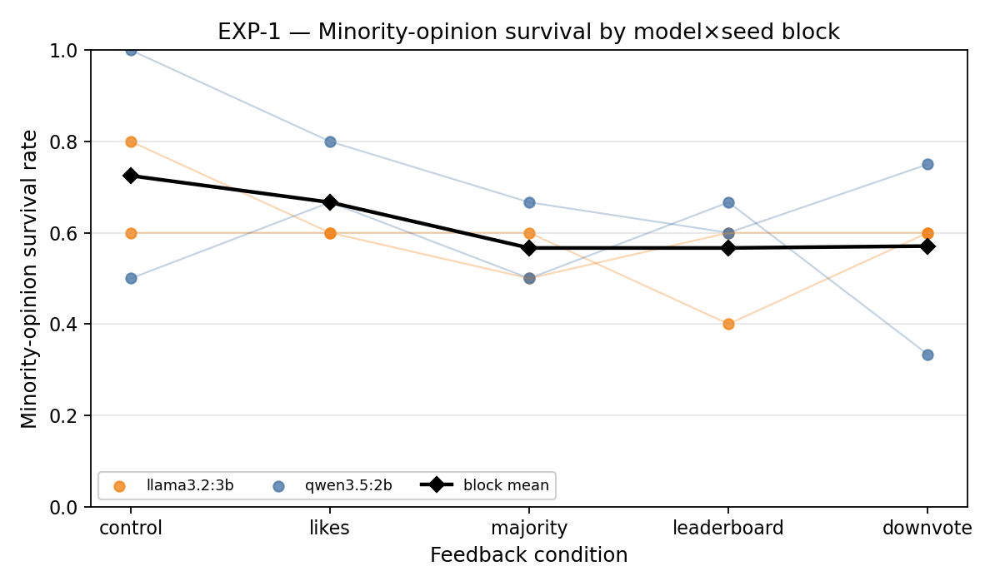
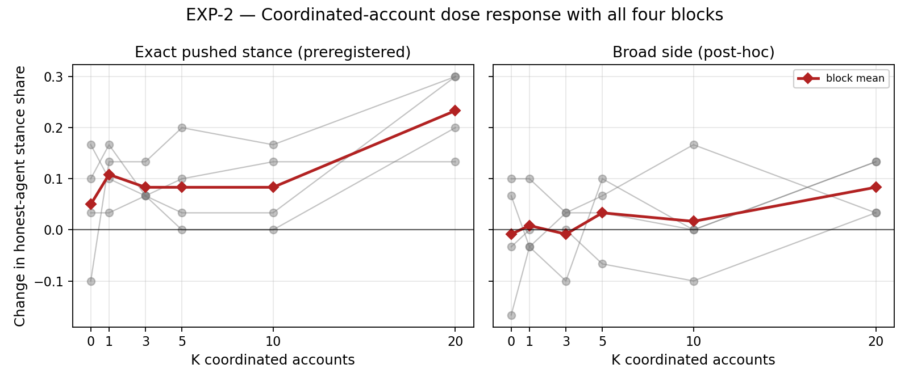
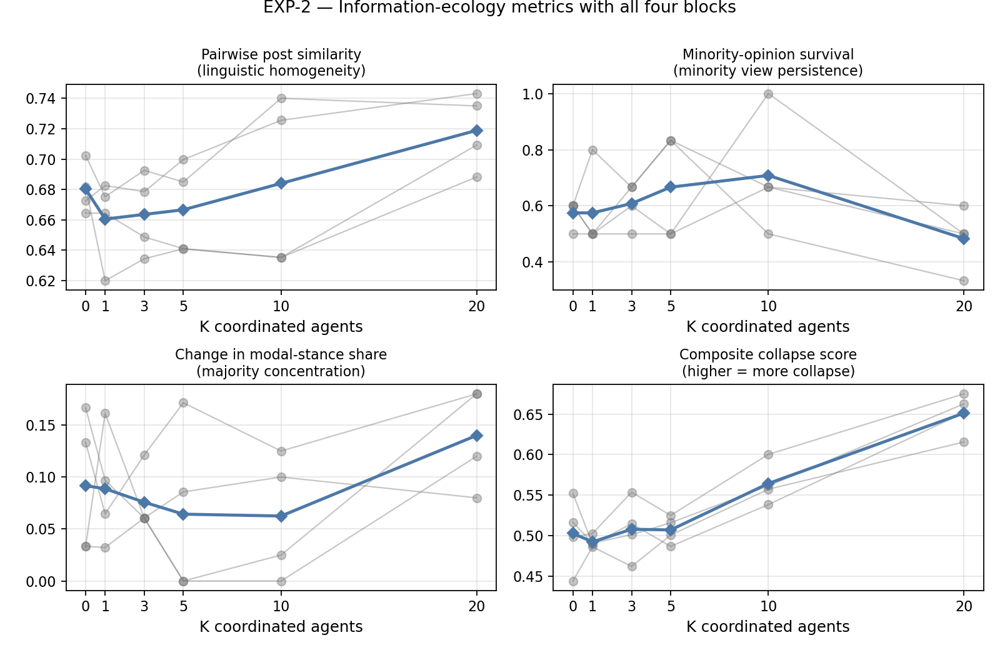
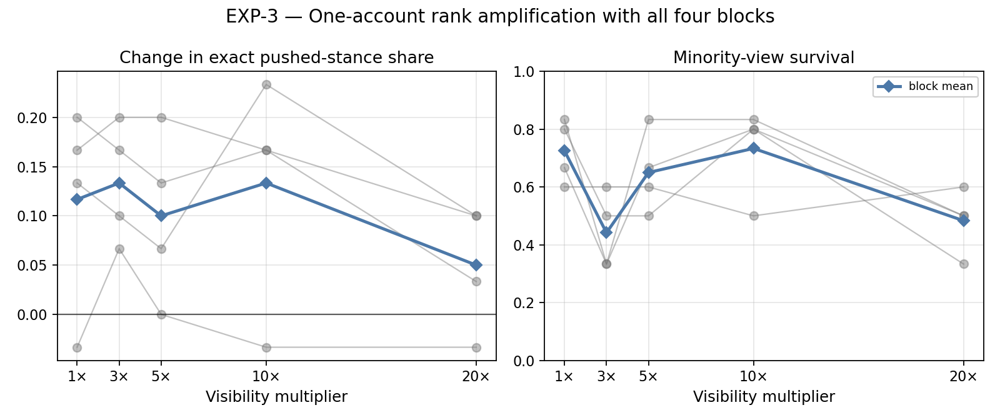
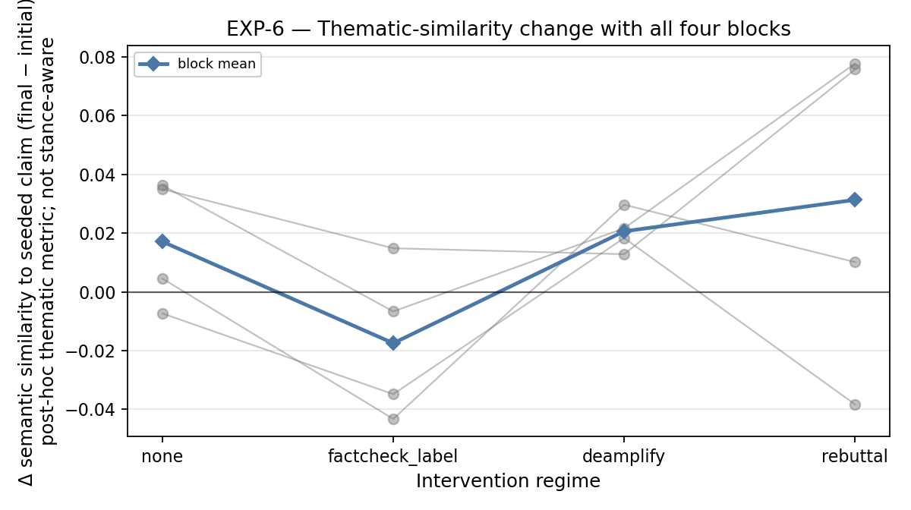
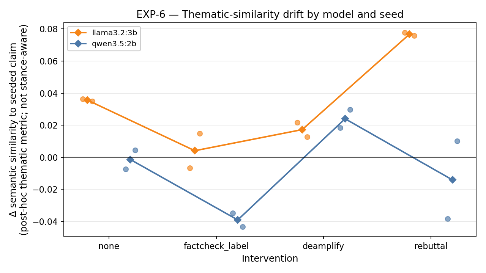
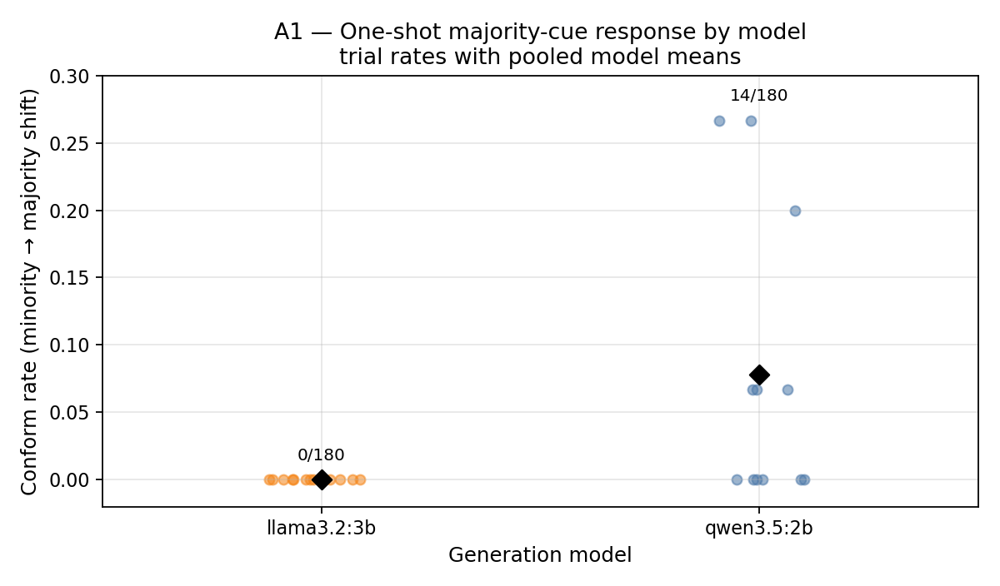

Rana Muhammad Usman
Independent researcher
Correspondence: usmanashrafrana@gmail.com
Code & data availability. Complete experimental pipeline, fixed seeds, raw posts (59,776 production / 64,562 total including pipeline-verification smoke runs), paired peer-vote logs, embedding cache, the preregistered analysis plan (
PREREGISTRATION.md), and the framing document (FRAMING.md) are released at https://github.com/ranausmanai/synthetic-social-networks and https://huggingface.co/datasets/ranausmans/synthetic-social-networks. All nine figures in this manuscript are rendered programmatically from the released data viapaper/make_figures.py.
Collective behavior in LLM-agent populations is difficult to evaluate with single-agent benchmarks or live experiments on human users. We present PV-SST, a peer-voted social-platform testbed in which persona-conditioned agents post, vote on one another, and receive those peer-generated signals in subsequent rounds. An initial 80-trial study motivates two mechanism-level hypotheses. We then test them in a separately frozen, preregistered matched-exposure experiment comprising 448 trials, four topics, four unused seeds, four current model families, and three prespecified larger variants.
The peer-ranked feed produces the clearest replicated effect relative to the topic-only control: final-round honest-post TF-IDF similarity increases in both the core-family panel (paired mean difference +0.0082, 95% block-bootstrap CI [0.0043, 0.0121], randomization p=0.000105, n=64 blocks) and the larger-variant panel (+0.0109 [0.0069, 0.0151], p=0.000001, n=48). Opposite-side survival decreases in the core panel (-3.9 percentage points [-6.8, -1.6], p=0.0068) but not conclusively in the larger variants (-1.0 pp [-3.1, 0.4], p=0.50), making minority suppression a model-dependent rather than universal result. Because peer-post exposure and like ranking are bundled in this contrast, it does not identify a ranking-only effect.
Holding adversarial impressions fixed, distributed coordinated accounts do not reliably outperform one amplified source. The pushed-direction contrast is positive but inconclusive in the core panel (+0.057 [-0.009, 0.125], p=0.112) and negative in the size extension (-0.040 [-0.113, 0.035], p=0.332), failing the preregistered consistency criterion. A separate misinformation probe identifies two measurement failures: literal matching misses paraphrases, while polarity-blind similarity conflates endorsement with rebuttal. The evidence supports a peer-ranked-feed convergence feed-convergence effect, rejects a model-general coordination advantage under equal exposure, and leaves human-platform transfer untested. We release 59,776 production posts, 528 production trials, peer-vote traces, code, and frozen protocols.
LLM agents increasingly operate in shared environments as assistants, simulated users, and autonomous participants. Research systems already model populations ranging from small social sandboxes to large social-media simulations (Park et al., 2023; Yang et al., 2024). Yet most LLM evaluation remains centered on individual responses or task completion, leaving collective behavior under platform feedback comparatively under-measured.
This creates a measurement problem for platform governance. The standard question, “can one influential account manipulate users?”, is too narrow for LLM-heavy platforms. Operators also need to know whether ordinary engagement UX changes the population before any attacker appears; whether coordinated LLM accounts damage discourse even when they fail to win the majority; and whether moderation systems built around literal claim detection still work when agents paraphrase, reframe, and respond in natural language. These are not questions that can be answered cleanly by live A/B tests on real users: the interventions are adversarial, the outcomes concern persuasion and misinformation, and the platform configurations of interest may not yet exist in a controlled form.
Existing evidence does not close this gap. Human-subjects work establishes that social proof, popularity signals, and fact-check labels can affect behavior, but it does not measure LLM-agent populations. Classical opinion dynamics models provide analytic clarity, but they replace language, persona, and platform feedback with low-dimensional update rules. Early LLM-agent simulations demonstrate that agents can produce social behavior, but many use environment-assigned or heuristic feedback signals rather than letting agents themselves create the social rewards that later shape the platform. For Trust & Safety purposes, this leaves the central operational question unanswered: which platform mechanisms actually move an LLM-agent population, and which popular threat models fail when tested under peer feedback?
We address this gap with a controlled, peer-voted social simulation testbed (PV-SST). The testbed is intentionally small enough to audit and reproduce, but rich enough to expose the platform loop that matters: LLM personas post, other agents vote on those posts in character, and the resulting social signals are fed back into future rounds. Each simulated user is an LLM-driven persona drawn from a stratified pool of 24 personas, assigned an initial stance on a debate topic and an in-character posting style. Across rounds, each agent observes a platform-mediated feedback view, produces a short post, votes on a random sample of others’ posts, and updates its opinion and confidence. Because every post, vote, stance update, and metric is logged (with vote rationales in the exploratory stage), the system is designed as a measurement instrument rather than as a black-box demo.
Within this simulation, we test four complementary threat vectors:
The same measurement logic requires a check on response sensitivity. We therefore include a one-round bandwagon diagnostic (A1) and describe a planned Reddit r/ChangeMyView replay (A2). A1 is executed and reported here. A2 was exercised only on five synthetic placeholder cases to verify the pipeline and is not evidence. Neither anchor validates transfer from LLM agents to people; A1 instead reveals how strongly the two tested models differ under an identical majority cue. Two model families and matched random seeds enable cross-model comparison.
The resulting product of the paper is not a prediction engine for Instagram, Snapchat, or X. It is a falsifiable threat-model probe: a way to test whether specific platform mechanisms, coordinated populations, amplified accounts, and moderation interventions move an LLM-agent population under controlled conditions. If a mechanism fails here, that failure constrains the threat model. If it succeeds here, it earns follow-up under larger samples, more models, more topics, and direct human validation. This framing follows prior simulation-based work in computational social science (Park et al., 2023; Hegselmann and Krause, 2002) while adding a peer-voted platform feedback loop and explicit response-sensitivity checks.
Contributions.
Methodologically, we contribute a peer-voted social simulation testbed (PV-SST) in which LLM agents generate posts, cast in-character votes, and receive those peer-generated signals in later rounds. The exploratory stage stores vote rationales; the computationally larger confirmation stores compact vote labels and parse status. PV-SST is an auditable evaluation instrument for collective LLM behavior rather than a claim of human fidelity.
Multi-agent LLM simulations. Park et al. (2023) established that LLM agents can maintain personas, memories, and social routines. Subsequent work has moved directly into opinion and platform dynamics. Chuang et al. (2024) simulate opinion formation in networks of LLM agents; OASIS scales social- media simulation to very large populations (Yang et al., 2024); SPARK jointly models stance and topic evolution (Zhang et al., 2025); and MOSAIC combines persona-conditioned agents, social graphs, engagement actions, and misinformation interventions (Liu et al., 2025). PV-SST does not claim to be the first LLM social simulator. Its narrower contribution is an auditable peer-feedback loop in which the likes and downvotes shaping later rounds are cast by agents in character and logged at the voter-target level. Exploratory runs also preserve per-vote rationales; the larger confirmation uses compact labels.
LLM-agent population evaluation. Recent work extends evaluation toward behavioral fidelity and population scale. Park et al. (2024) construct interview-conditioned agents for 1,052 people, while OASIS evaluates large-scale diffusion, polarization, and herding. These systems establish fidelity and scale as core dimensions. PV-SST instead emphasizes mechanism isolation, raw-trace auditability, and explicit limits on human transfer.
Opinion dynamics. Classical models, DeGroot averaging (DeGroot, 1974), Hegselmann–Krause bounded-confidence (Hegselmann and Krause, 2002), and the Friedkin–Johnsen influence model, provide mathematical baselines for opinion convergence under social influence. Their strength is analytic clarity: assumptions are explicit and dynamics are tractable. Their weakness for the present question is that they abstract away exactly the substrate platforms now need to evaluate: language, persona, peer reward, paraphrase, and moderation text. We use these models as conceptual anchors, but the paper’s contribution is empirical measurement in a language-producing, peer-feedback system rather than another closed-form update rule.
Social-proof and conformity dynamics. Asch (1956) established that humans conform to unanimous majority pressure in roughly one-third of critical trials in a perceptual-judgement task. Salganik, Dodds, and Watts (2006) demonstrated experimentally that exposure to popularity signals increases both inequality and unpredictability of cultural-market outcomes. Muchnik, Aral, and Taylor (2013) measured a 25 percent positive-herding bias on a Reddit-like comment platform following a single arbitrary upvote. These studies motivate A1’s one-shot majority-cue diagnostic, but none provides a like-for-like conversion to the discrete stance shifts used here. Accordingly, we report A1 by model and do not treat a literature-derived range as a calibrated human baseline.
Conformity and minority expression in LLM collectives. The closest precedent to EXP-1 is Zhong et al. (2025), who show spiral-of-silence-like majority dominance in LLM-agent rating systems when history and persona signals are combined. Their multi-model evidence means minority decline in an LLM collective is not novel by itself. EXP-1 instead asks which specific engagement surfaces reproduce a related pattern when rewards are generated by peers; the present sample supports only directional estimates.
Influence operations and coordinated inauthentic behavior. Empirical measurement of real-world coordinated campaigns has been driven by industry threat reports and academic analyses. Those reports are essential for taxonomy and detection, but they rarely permit controlled counterfactuals: the same platform cannot be rerun with K=1, K=3, K=5, K=10, and K=20 coordinated accounts while holding personas, topic, and feedback constant. We adopt the Coordinated Inauthentic Behavior (CIB) framing used in industry policy work, and use simulation to ask a counterfactual dose-response question: how much coordinated population is needed before opinion and discourse ecology move?
Misinformation interventions. Pennycook and Rand (2021) synthesize a substantial body of human-subjects evidence on the psychology of fake news and the effectiveness of accuracy-prompt and label interventions. In LLM-agent settings, MOSAIC evaluates moderation strategies and Borah et al. (2026) study demographic variation in misinformation susceptibility. Our smaller intervention sweep (EXP-6) mirrors three platform policy levers: fact-check labels, visibility reduction, and community-note-style rebuttal. The contribution is not another intervention ranking. It is an observed failure of two simple measurement choices on generated discourse: strict surface-form matching has zero recall for paraphrased claims, while unconditioned semantic proximity has no polarity. EXP-6 is therefore a measurement audit, not a moderation-effectiveness study.
Algorithmic shaping of exposure. Bakshy, Messing, and Adamic (2015) showed that Facebook’s algorithmic ranking removes about 15 percent of cross-cutting political content from users’ feeds, with users’ own click-through behavior removing 70 percent more. EXP-1 is complementary in framing: where Bakshy et al. measure exposure filtering for human users, we treat engagement surfaces as controlled inputs to an LLM-agent population. The paper does not infer human-platform effects from that comparison.
Each simulated run constructs an N-agent platform on a single debate topic (“Should AI-generated content be labeled on social platforms?” for the runs reported here). Every agent is initialized with: (a) a unique persona drawn from a 24-persona pool stratified by narrative group (marginalized, mainstream, contrarian); (b) one of seven discrete initial stances ranging from “strongly support” through “strongly oppose”; (c) a confidence level correlated with stance extremity; (d) a posting-style descriptor; (e) an empty memory.
For R rounds, each agent in turn (i) reads its feedback block, the platform-mediated view of prior-round activity, varied by condition (§3.2); (ii) produces one short JSON-structured post (at most 280 characters) in its persona’s voice; (iii) updates its stance and confidence, with a brief reason. Generation uses the Ollama runtime with reasoning-token emission disabled, returning compact structured JSON outputs.
Five feedback conditions define what agents see between rounds:
In all production conditions, the likes and downvotes used to construct feedback are produced by peer voting: every round, each agent reads a random sample of K=5 posts from the prior round (excluding its own) and votes +1 / 0 / −1 on each in character. This replaces the pipeline’s earlier heuristic majority-alignment proxy with peer-voted feedback, in which the social-reward signal that shapes subsequent rounds is produced by other agents’ in-character judgements rather than by environment-imposed heuristics. Every trial preserves voter id, target id, vote, and parse status. The exploratory stage additionally preserves an in-character reason; the confirmatory stage omits reasons under its frozen compact-vote protocol. We refer to the combined design, peer-voted feedback plus persona-based agents, multi-round simulation, and full vote-trace logging, as the peer-voted social simulation testbed (PV-SST), and treat it as a primary methodological contribution.
Six primary metrics are computed per round and aggregated to scalars:
nomic-embed-text embedding space) between an agent’s post
and its persona descriptor.A composite
persona_collapse_score = 0.5·majority_fraction + 0.3·pairwise_sim + 0.2·(1 − persona_retention)
is reported but always alongside its components.
For EXP-2 and EXP-3 we report two complementary flip criteria. The
strict criterion (honest-pushed-share > 0.5 on the
exact pushed stance bucket) corresponds to the preregistered
final_honest_pushed_share outcome. The
broad criterion (honest-pushed-share > 0.5 on the
three-bucket side containing the pushed stance) was introduced post-hoc
but is motivated by the preregistration’s commitment to report
direction-of-opinion shifts; we mark it explicitly as post-hoc
throughout.
For EXP-6, the preregistered primary outcome is the literal
keyword-based final_endorser_share. After
observing that this metric returned zero across all 16 trials (agents
paraphrased rather than reproducing keywords), we developed a
semantic embedding-based thematic-similarity analysis
as a post-hoc secondary metric (§8.3). We report both and clearly label
the semantic analysis as thematic proximity, not endorsement.
We additionally run a post-hoc stance-label validation on all 608
honest- agent endpoint posts (rounds 0 and 9). Two independent local
judges (qwen2.5:7b and llama3.1:8b,
temperature 0) assign one of endorse, reject,
neutral, or unrelated toward the specific
seeded allegation. Before producing a consensus label, we require raw
agreement of at least 0.70 and Cohen’s kappa of at least 0.50. If either
gate fails, judge-specific outputs are retained but no adjudicated
endorsement result is reported. The prompts, labels, and analysis are
released in src/analyze_misinfo_stance.py and
paper/stance_analysis/.
Before production runs we committed an analysis plan
(PREREGISTRATION.md) including primary outcomes, planned
statistical tests, and explicit falsification criteria for each
hypothesis. We additionally committed a framing document
(FRAMING.md) specifying what claims the simulation does and
does not support. Both files carry the git timestamp predating the first
production trial.
We disclose all sample-size deviations between the preregistered design and the executed runs, with the reason for each.
| Aspect | Preregistered (PREREGISTRATION.md §“Sample sizes”) | Executed | Reason for deviation |
|---|---|---|---|
| EXP-1 seeds × rounds × agents | 2 models × 3 seeds × 5 conditions × 20 agents × 20 rounds | 2 × 2 × 5 × 20 × 15 | Compute budget; reduced to fit single-GPU 57-hour chain |
| EXP-2 seeds × rounds × baseline agents | 2 × 3 × 6 K × 50 baseline × 12 rounds | 2 × 2 × 6 × 30 × 10 | Compute budget; full prereg sample would have required ~140 GPU-hours |
| EXP-6 seeds × rounds × agents | 2 × 3 × 4 interventions × 25 agents × 12 rounds | 2 × 2 × 4 × 20 × 10 | Compute budget |
| EXP-3 (influence-amplification) | Not in preregistration | Added post-hoc, 2 × 2 × 5 multipliers | Exploratory addition during the chain run |
| Broad-side flip criterion (EXP-2) | Not in preregistration | Reported alongside preregistered strict criterion | Added post-hoc after strict criterion returned uninformative results at low K |
| Thematic-similarity metric (EXP-6) | Not in preregistration | Reported as exploratory alongside preregistered keyword metric | Added post-hoc after keyword metric returned 0 across all 16 trials |
| Statistical tests (Bonferroni-corrected t-tests) | Preregistered for primary outcomes | Replaced by exact paired sign-flip tests | n=2 seeds makes asymptotic t-tests unreliable; exact tests preserve the model-by-seed block |
Implication. Because the executed sample is smaller than the preregistered design across every experiment, none of the results reaches the preregistered confirmatory-significance bar. They are exploratory effect estimates from a smaller-than-planned sample.
Small-sample analysis. We treat each matched
(model, seed) pair as one run-level block and never treat
posts, agents, or rounds as independent replicates. For every
treatment-control contrast we report the mean paired difference and a
two-sided exact sign-flip p-value over the four blocks. With four
blocks, the smallest attainable two-sided p-value is 2/16 = 0.125, even
when all four differences share a sign. Because the two model families
are fixed and each contains only two random seeds, these p-values and
block-bootstrap intervals are descriptive sensitivity summaries, not
population-calibrated inference over models, topics, or platforms. The
complete table and executable analysis are released as
paper/robustness_results.md,
paper/robustness_results.csv, and
src/analyze_robustness.py.
We designed one response-sensitivity diagnostic and one human-validation plan. A1 is an executed one-shot majority-cue diagnostic; A2 is a deferred human-replay design. Because the A1 stimulus and outcome are not matched to a human experiment, we do not call it a calibration or use it to scale any main result.
Anchor A1 (bandwagon-conformity) shows agents a synthetic “X% of users agree” signal and measures the conformity shift among initially-disagreeing agents. Muchnik et al. (2013) and Salganik et al. (2006) motivate the choice to test a visible social signal, but their treatments and outcomes are not commensurate with A1’s discrete stance transitions. We therefore do not construct a human reference band from those studies.
Anchor A2 (ChangeMyView replay) is designed to feed real r/ChangeMyView conversations through our simulation and compare predicted view-changes to documented delta-award outcomes. For this submission we executed A2 only against a 5-case synthetic placeholder dataset, which verifies the pipeline end-to-end but does not constitute a calibration; the production A2 run on the real corpus remains a methodological priority (§10.3, §11).
Models. Two open-weight LLMs via Ollama:
qwen3.5:2b (Alibaba, approximately 2.3B parameters) and
llama3.2:3b (Meta, approximately 3B parameters), using the
default local Ollama model tags configured for the experiment.
Seeds. Two seeds per cell ({42, 7}) for variance estimation. We acknowledge n=2 is a floor for the exploratory stage; see Limitations (§11).
Sample sizes per experiment.
| Experiment | Trials | Agents per trial | Rounds | Conditions |
|---|---|---|---|---|
| EXP-1 baseline | 20 | 20 | 15 | 5 |
| EXP-2 astroturfing | 24 | 30 + K | 10 | 1 (inner) × 6 K |
| EXP-6 misinformation | 16 | 20 | 10 | 4 interventions |
| EXP-3 influence | 20 | 30 + 1 | 10 | 5 multipliers |
| Confirmatory extension | 448 | 12 honest + 0/1/4 adversarial | 6 | 4 paired conditions |
| A1 bandwagon anchor | 24 | 30 | 1 | 3 majority strengths × 2 sides |
Compute. The initial experiments executed on an RTX 4000 Ada workstation GPU in approximately 57 hours. The confirmatory extension executed on one RTX 5090 and adds 35,616 posts and 32,256 peer-voter calls. Across the reported production experiments, the artifact contains 59,776 agent posts.
Code, configs, raw logs. Released alongside this paper at the project repository (https://github.com/ranausmanai/synthetic-social-networks) and dataset repository (https://huggingface.co/datasets/ranausmans/synthetic-social-networks), including all per-agent posts and peer-vote logs to permit independent re-analysis.
H1 (preregistered): Across model families, each social-pressure
condition will produce measurable shifts versus control on
at least one primary outcome.
For each of the five conditions, we run 2 models × 2 seeds = 4 trials of 20 agents × 15 rounds with peer voting.
Figure 1 plots every model-by-seed block and the block mean.

| Condition | persona retention | pairwise sim | minority survival | majority fraction |
|---|---|---|---|---|
| control | 0.547 | 0.636 | 0.725 | 0.487 |
| likes | 0.540 | 0.672 | 0.667 | 0.500 |
| majority | 0.544 | 0.619 | 0.567 | 0.550 |
| leaderboard | 0.542 | 0.661 | 0.567 | 0.500 |
| downvote | 0.532 | 0.668 | 0.571 | 0.488 |
Δ versus control, primary outcomes:
| Condition | Δ minority survival | Δ pairwise sim | Δ majority concentration |
|---|---|---|---|
| likes | −5.8 pp | +3.6 pp | +1.3 pp |
| majority | −15.8 pp | −1.7 pp | +6.3 pp |
| leaderboard | −15.8 pp | +2.5 pp | +1.3 pp |
| downvote | −15.4 pp | +3.2 pp | +0.1 pp |
The condition means are compatible with engagement surfaces acting as treatments, but they do not establish general minority-view suppression. Mean minority survival is lower than control under all four treatments (−5.8 to −15.8 percentage points), yet the paired block signs are mixed: likes 1/2/1 positive/negative/tied blocks (p=0.500), majority 0/2/2 (p=0.500), leaderboard 1/3/0 (p=0.250), and downvote 0/3/1 (p=0.250). The wide control range [0.50, 1.00] contains every treatment range.
The clearest EXP-1 pattern is instead linguistic convergence under
likes. Final pairwise post similarity rises by 3.66 points
relative to control in all four model-by-seed blocks (95% descriptive
block-bootstrap interval [+0.36, +8.42] points; exact p=0.125). The
corresponding effects are +6.97 points for qwen3.5:2b and +0.36 for
llama3.2:3b, so magnitude remains model-dependent. Other engagement
treatments do not show the same four-block consistency on pairwise
similarity.
H1 required each treatment to move at least one primary outcome. The directional means are compatible with H1, but the reduced design does not meet its preregistered confirmatory criterion. This is best read as a screening result: peer-generated likes repeatedly homogenize language in the tested population, while the broader minority-survival pattern requires more seeds before it can support a suppression claim. This positioning also distinguishes EXP-1 from prior multi-model evidence for spiral-of-silence dynamics (Zhong et al., 2025).
Result summary. Likes increased linguistic similarity in all four model-by-seed blocks. Minority-survival means declined under every engagement treatment, but blockwise inconsistency and wide overlap prevent a firm minority-suppression conclusion.
H2 (preregistered): There exists a threshold K* such that injecting at least K* coordinated AI accounts into an N-agent platform flips honest-majority opinion in at least 50% of (model, seed) runs. Prior expectation: K*/N at most 0.20.
Population: 30 honest agents (independent personas,
randomly-distributed initial stances) + K coordinated agents, where K is
one of {0, 1, 3, 5, 10, 20}. Coordinated agents share a pushed opinion
(“strongly support”) and a scripted angle they reinforce naturally
across rounds. All trials run under the likes condition
with peer voting, 10 rounds, 2 models × 2 seeds × 6 K-values = 24 trials
total.
We report two flip-rate metrics, one preregistered and one post-hoc:
final_honest_pushed_share outcome.Figure 2 plots the dose-response for both criteria.

| K | strict flip rate | broad flip rate | Δ broad-shift vs K=0 |
|---|---|---|---|
| 0 | 0% | 50% (baseline noise) | 0.000 |
| 1 | 0% | 0% | +0.017 |
| 3 | 0% | 25% | 0.000 |
| 5 | 0% | 25% | +0.042 |
| 10 | 0% | 50% | +0.025 |
| 20 | 50% | 50% | +0.092 |
The “Δ broad-shift vs K=0” column reports
(final_broad − initial_broad) for K_X minus (final_broad − initial_broad) for K=0.
That is, it compares the per-K change-from-initial against the
control’s change- from-initial, not the simple difference of
final broad shares. We use this because initial broad shares vary
slightly across cells due to random persona/stance assignment; this
measure isolates the coordination-induced shift from the baseline
drift.
Figure 3 shows simultaneous degradation of four information-ecology metrics at the K=20 threshold:

| Metric | K=0 | K=20 | Δ |
|---|---|---|---|
| pairwise post similarity (linguistic homogeneity) | 0.680 | 0.719 | +3.9 pp |
| minority-view survival | 0.575 | 0.483 | −9.2 pp |
| majority concentration | +0.092 | +0.140 | +4.8 pp |
| composite collapse score | 0.503 | 0.651 | +14.8 pp |
High coordinated-account load produces the most internally consistent changes in the study. Relative to K=0, K=20 increases the change in exact pushed-stance share by 18.3 points, final pairwise similarity by 3.9 points, the change in modal-stance concentration by 4.8 points, and the preregistered collapse score by 14.8 points. Every one of these four contrasts has the same direction in all four model-by-seed blocks (exact p=0.125 for each). The within-block linear slope of exact pushed-stance change over K is also positive in all four blocks (+0.0075 per coordinated account, p=0.125).
Two commonly quoted summaries are weaker. Minority-view survival falls by 9.2 points on average, but only two blocks decline and two tie (p=0.500). The broad-side metric is noisy: K=0 already produces broad flips in 2/4 trials, and the K=20-minus-K=0 broad-shift contrast has mixed block signs (+9.2 points, p=0.500). We therefore treat the preregistered exact stance and ecology metrics, not the post-hoc broad flip rate, as the primary evidence.
At K=20, 2/4 trials cross the preregistered strict-majority threshold versus 0/4 at K=0 (paired exact McNemar p=0.500). Both events occur at seed 7, one per model; neither seed-42 trial flips. The data consequently do not identify a reliable threshold. They also falsify the preregistered prior K*/N <= 0.20: the 50% flip criterion appears only at K/N=0.40, the highest load tested.
Result summary. At the largest coordinated-account load, exact pushed-stance movement, linguistic convergence, modal-stance concentration, and the preregistered collapse score shift in the same direction in all four blocks. The sample does not establish a flip threshold, and low-ratio coordination does not reproduce a dramatic takeover.
EXP-3 was added post-preregistration to test a distinct attack vector, single-account visibility amplification, that was not part of the original analysis plan. The preregistered H4 in our analysis plan pertains to persona-group vulnerability under social pressure and is not reported in this manuscript. We frame EXP-3 as an exploratory post-prereg experiment with the following hypothesis:
A single AI account with sufficient visibility amplification will produce increasing honest-agent adoption of its pushed stance.
Population: 30 honest baseline agents + 1 “influencer” agent assigned
a “prominent verified industry commentator” persona and a fixed pushed
stance. At multipliers > 1, the influencer is force-included in every
honest agent’s likes feed and its effective
like-rank is multiplied by the visibility multiplier (so even at low
actual peer-vote counts it dominates the top-K). At 1× the influencer
receives no special treatment and competes for top-K visibility on equal
terms with the 30 baseline agents, so the 1× cell serves as a
“boosting-off control” rather than an influencer-absent control. We
sweep the multiplier across {1, 3, 5, 10, 20}. 2 models × 2 seeds × 5
multipliers = 20 trials total. Inner condition: likes with
peer voting, 10 rounds.
EXP-3 is not a matched counterpart to EXP-2. EXP-2 adds K posting and voting accounts and uses a six-item feed; EXP-3 adds one account, uses a five-item feed, and for multipliers above 1 force-includes that account while changing its rank score. Population size, total attacker-authored content, feed depth, and exposure are therefore different. Cross-experiment contrasts are descriptive only.
Figure 4 plots pushed-stance change and minority survival for every model-by-seed block.

| Multiplier | final broad share | final strict share | broad flip rate | minority survival |
|---|---|---|---|---|
| 1× (control) | 0.492 ± 0.036 | 0.400 | 75% | 0.725 |
| 3× | 0.442 ± 0.064 | 0.400 | 25% | 0.442 |
| 5× | 0.475 ± 0.043 | 0.367 | 50% | 0.650 |
| 10× | 0.492 ± 0.083 | 0.392 | 50% | 0.733 |
| 20× | 0.433 ± 0.085 | 0.358 | 25% | 0.483 |
Amplification does not increase adoption of the influencer’s pushed stance. From 1x to 20x, the paired change in strict pushed-stance share is −6.7 points (0/3/1 positive/negative/tied blocks, p=0.250), and broad-side change is −5.0 points with mixed signs (2/2/0, p=0.500). Within-block slopes over log2(multiplier) are likewise non-positive on average for both strict and broad stance change. These data reject the exploratory hypothesis’s expected positive dose-response within this implementation; they do not establish backfire.
A different outcome moves: minority-view survival declines from 0.725 at 1x to 0.483 at 20x, a paired difference of −24.2 points (0/3/1 blocks, p=0.250). The within-block slope over log2(multiplier) is negative in all four blocks (−2.5 points per doubling, p=0.125), although the condition means are visibly non-monotonic and the metric is coarse. The careful interpretation is that rank amplification did not steer agents toward the promoted stance but may still alter which minority stances persist.
EXP-2 and EXP-3 consequently motivate, but do not test, a population-versus- rank mechanism hypothesis. A valid causal comparison would hold total attacker impressions, attacker-authored posts, population size, feed depth, and initial stances constant. The present experiments hold none of those quantities jointly fixed, so Trust & Safety prioritization cannot be inferred from their difference.
Result summary. One-account rank amplification shows no positive pushed-stance dose-response. An exploratory minority-survival slope is negative in all four blocks, indicating that “no persuasion” is not the same as “no ecological effect.”
H3 (preregistered): At least one of {fact-check label, deamplification, rebuttal} will produce a statistically significant reduction in final endorsement share versus the no-intervention baseline.
One designated agent (a00) is seeded with a
domain-plausible but factually contestable claim and instructed to
repeat its themes with high confidence across all rounds. Nineteen
honest agents share the platform under the likes condition
with peer voting, for 10 rounds.
Four intervention regimes:
2 models × 2 seeds × 4 interventions = 16 trials.
A literal detector counted a post only when all three configured
strings (90%, ai labs, suppress)
were present. It returned zero honest-agent matches across all 16
trials. The zero is not evidence of zero endorsement: the raw logs
contain close restatements that fail the conjunction, for example,
“How can we trust labels when 90% of AI lab drafters are also the
ones suppressing competition?” Conversely, many posts discuss
regulation, markets, or AI labs without endorsing the seeded
allegation.
We therefore developed a post-hoc
thematic-similarity analysis: we embed each
honest-agent post and the seeded false claim with
nomic-embed-text, then use cosine similarity as a measure
of thematic proximity. It is not an endorsement measure because cosine
similarity has no stance or polarity.
Figure 5 plots the per-intervention thematic-similarity change.

| Intervention | Δ similarity (mean ± std) | final similarity | above 0.55 threshold | paired Δ vs none |
|---|---|---|---|---|
| none | +0.017 ± 0.019 | 0.580 | 14.5 / 19 | 0.000 |
| factcheck_label | −0.018 ± 0.023 | 0.557 | 10.8 / 19 | −0.035 |
| deamplify | +0.021 ± 0.006 | 0.589 | 13.5 / 19 | +0.004 |
| rebuttal | +0.031 ± 0.049 | 0.643 | 18.0 / 19 | +0.014 |
The stance-label validation fails its reliability gate. Across 608 endpoint posts, the two judges agree on 43.6% of labels (Cohen’s kappa = 0.258). Their mean endorsement changes also disagree in direction:
| Intervention | qwen2.5:7b Δ endorsement | llama3.1:8b Δ endorsement |
|---|---|---|
| none | −0.026 | +0.026 |
| factcheck_label | +0.079 | −0.013 |
| deamplify | +0.118 | +0.053 |
| rebuttal | 0.000 | +0.066 |
Because both agreement criteria fail, we do not adjudicate these labels or use either judge to rank interventions.
The principal EXP-6 result is a paired measurement failure. We call the all-keyword detector’s false negatives for close restatements paraphrase leakage. We separately call the embedding metric’s inability to distinguish endorsement from refutation stance confounding. Thus the preregistered primary outcome cannot test H3, and the post-hoc similarity measure cannot repair it. These failures are specific to the simple baselines implemented here; they are not claims about modern production moderation systems.
The failed stance audit shows that replacing cosine similarity with an unvalidated LLM judge is not sufficient. The judges disagree on both label identity and treatment direction; for example, fact-check labels increase estimated endorsement under qwen2.5:7b but decrease it under llama3.1:8b. Human annotation or a validated domain-specific stance model is required.
The similarity contrasts quantify the artifact rather than intervention effectiveness. Fact-check labels reduce similarity change versus no intervention by 3.46 points in all four blocks (exact p=0.125). Deamplification differs by +0.35 points with mixed signs (p=0.750), and rebuttal by +1.42 points with mixed signs (p=0.375). The rebuttal condition injects text about the same topic, so higher similarity is expected even when agents reject the claim. Labels can likewise alter vocabulary without altering belief.
The implementation also explains why literal deamplification is ineffective as a filter: it removes only posts containing the full three-string conjunction. Close restatements remain visible. The defensible conclusion is therefore methodological: surface matching and polarity-blind similarity bracket the problem but do not measure misinformation adoption. A validated stance-aware annotation is required before H3 or any intervention ranking can be evaluated.
The exploratory study leaves two decisive questions: whether the
engagement effect survives broader replication, and whether coordinated
populations have an effect beyond receiving more impressions than one
account. Before inspecting outcomes, we froze
CONFIRMATORY_PREREGISTRATION.md. The core crosses four
model families (Qwen 3.5 4B, Gemma 4 E4B, Ministral 3 8B, and Granite 4
3B), four platform-policy topics, four unused seeds, and four paired
conditions, yielding 256 trials and 64 model-topic-seed blocks. A
prespecified size extension applies the identical matrix to Qwen 3.5 9B,
Gemma 4 12B, and Ministral 3 14B, yielding 192 trials and 48 blocks.
Each trial contains 12 honest agents with exactly balanced initial stances. The conditions are a topic-only control, a feed of five previous-round peer posts ranked by peer-generated likes, one adversarial source, and four coordinated adversarial sources. The peer-ranked-feed contrast intentionally tests that platform surface as a bundle; it does not separate exposure to peer posts from ranking by likes. In both attack conditions, every honest agent receives exactly one adversarial and four organic feed impressions after round 0; the attacker argument prompt, number of adversarial impressions, feed depth, rounds, and honest voters are held fixed. The distributed arm generates four account-specific realizations of that prompt and rotates them across viewers, whereas the single-source arm generates one realization per round. The contrast therefore tests a coordinated-source package, source multiplicity plus cross-viewer message variation, under equal impressions. All 448 trials completed. Every block contains all four conditions, all exposure audits pass, and no model exceeds the preregistered 5% parser-warning threshold.
The inferential unit is the paired model-topic-seed block. We report paired means, 20,000-draw block-bootstrap intervals, exact sign tests, and exhaustive or one-million-draw sign-flip randomization tests. The primary coordination outcome is change in mean honest-agent stance aligned with the attack direction. Confirmatory lexical similarity is the mean off-diagonal cosine similarity among TF-IDF vectors for the 12 honest agents’ final-round posts; the vocabulary is fitted within each trial endpoint. Peer-ranked-feed outcomes are reported separately rather than combined after observing results.
| Panel and preregistered contrast | n blocks | paired mean | 95% bootstrap CI | randomization p |
|---|---|---|---|---|
| Core: PDI primary | 64 | +0.0573 | [-0.0091, +0.1250] | 0.1124 |
| Larger: PDI primary | 48 | -0.0399 | [-0.1128, +0.0347] | 0.3317 |
| Core: feed survival | 64 | -0.0391 | [-0.0677, -0.0156] | 0.0068 |
| Larger: feed survival | 48 | -0.0104 | [-0.0312, +0.0035] | 0.5000 |
| Core: feed TF-IDF similarity | 64 | +0.0082 | [+0.0043, +0.0121] | 0.000105 |
| Larger: feed TF-IDF similarity | 48 | +0.0109 | [+0.0069, +0.0151] | 0.000001 |
The peer-ranked feed increases final-round honest-post TF-IDF similarity in both panels. The effect is positive for three of four core models and all three larger variants; the pooled direction is also positive for every topic in each panel. This is the confirmatory result: exposure to a peer-ranked feed produces lexical convergence even without an adversary. The effect size is modest, 0.008 to 0.011 TF-IDF cosine-similarity units, and should not be described as opinion capture or as a ranking-only effect.
Opposite-side survival falls in the core panel, but the model strata reveal that Qwen 3.5 4B carries most of the effect (-12.5 pp); Gemma E4B is exactly null and the other core-family estimates are small. The larger variants are inconclusive. The expanded evidence therefore narrows the old claim: peer-ranked-feed minority suppression occurs in some model populations, not as a model-general law.
The population-driven-influence criterion is not met. Although the core estimate is positive, only three of four model families and two of four topics are positive, and its interval crosses zero. More importantly, the separately analyzed larger variants have a negative pooled estimate, with only one of three variants and one of four topics positive. Under matched exposure, the tested distributed-source package has no reliable advantage over one source. This falsifies the general PDI hypothesis as originally framed; it does not show that real coordinated campaigns are harmless, because real campaigns can gain exposure, optimize message diversity, exploit networks, and interact with people.

Figure 8 disaggregates EXP-6 by model family.

| Intervention | qwen3.5:2b Δ similarity | llama3.2:3b Δ similarity |
|---|---|---|
| none | about 0.000 | +0.036 |
| factcheck_label | −0.039 | +0.004 |
| deamplify | +0.024 | +0.018 |
| rebuttal | −0.014 | +0.077 |
In the no-intervention baseline, qwen3.5:2b shows a mean Δ similarity of −0.001 (essentially zero, with one trial slightly negative and one slightly positive), while llama3.2:3b shows +0.036 (both trials positive). Across all four interventions, qwen3.5:2b’s mean Δ is −0.008 (essentially zero with high variance) while llama3.2:3b’s mean Δ is +0.034 (consistently positive). The cross-model difference is qualitative, qwen does not exhibit positive theme-similarity drift in this metric, while llama does, instead of a fixed quantitative ratio. We deliberately avoid the framing “llama”drifts N times more than qwen” because qwen’s baseline rate is near zero, which makes any multiplicative ratio mathematically uninformative.
This single comparison (n=2 model families, n=2 seeds per model per intervention cell) does not generalize to a claim about cross-model heterogeneity in the broader open-weight LLM population. It does, however, motivate the methodological observation that when deploying LLM-driven account populations (companion bots, customer-service agents, AI personas, automated influencers), the underlying language model may be a non-trivial source of variance in platform-integrity metrics. Establishing this as a general pattern would require replication across 5–10 model families.
Figure 9 plots the A1 result by model.

Across all 24 A1 trials (two models × two seeds × three majority-claim strengths × two pushed-stance sides), 14 of 360 minority agents shifted toward the claimed-majority stance after a single round of bandwagon-signal exposure, for a pooled conformity rate of 0.039. The result is strongly heterogeneous by model:
The overall pooled rate is 0.039, but pooling is secondary because model identity almost completely determines the response. Agent-level binomial intervals would incorrectly treat agents nested in the same trial as independent, so we report trial values rather than such intervals. A1 therefore supports one conclusion only: sensitivity to an identical social cue is model-dependent in this testbed. It does not rank these agents against humans, validate behavioral realism, or scale any main-experiment effect.
Our analysis plan included a second validation design (A2): predicting real human view-shifts on Reddit r/ChangeMyView conversations. We implemented the pipeline and verified it end-to-end against a 5-case synthetic dataset, but we did not execute A2 on the production CMV corpus before this submission. The synthetic-pipeline run verifies software only. Until A2 or another matched human study is executed, simulation-to- human transfer remains untested.
Two-stage evidence. Sections 5–8 remain exploratory: their cells use two seeds and one topic, and four paired blocks permit a minimum two-sided exact p-value of 0.125. Section 9 is a separately frozen confirmation with four new seeds, four topics, four core families, three larger variants, and 112 complete paired blocks. The extension materially improves precision and scope, but model-topic-seed blocks are crossed observations from one simulation architecture, not 112 independent platforms or human populations. The preregistered bootstrap and randomization tests treat complete paired blocks as exchangeable simulation replications; model- and topic-stratified estimates are reported to expose dependence on either factor.
Multiplicity. The PDI stance contrast is the preregistered primary test. The feed outcomes are reported as separate secondary estimands, alongside all six outcomes in the released analysis table, without family-wise multiplicity adjustment. Their p-values are nominal. The lexical-similarity finding is emphasized because its interval excludes zero in both separately analyzed panels and its direction is positive across all topic strata, not because it was selected from a single favorable table cell.
Within-cell variance overlaps between-cell effects (EXP-1 §5.4). The control condition’s per-trial minority-survival range [0.50, 1.00] spans the per-trial ranges of every pressure condition. Our reported 6–16 pp direction-of-means effects are smaller than within-cell variability. We report these as screening estimates, not as evidence that every engagement surface suppresses minority views.
Seed confound in the K=20 flip (EXP-2 §6.5). Both K=20 trials that flipped occurred at the same random seed (seed=7), in both qwen and llama. Neither seed=42 trial flipped, in either model. With n=2 seeds we cannot disentangle a coordination-driven flip from a seed-driven flip; the 40 % coordination threshold should be read as the smallest K at which any flip was observed in this study, not as a firm threshold estimate.
Model scope. The exploratory stage uses two 2–3B models. The confirmatory stage adds four current open-weight families and three 9B–14B variants, but does not include proprietary frontier models. Size variants from one family are analyzed separately rather than counted as independent families. The results describe these seven variants under one inference stack.
Mechanism contrast. EXP-2 and EXP-3 differ in population size, attacker count, attacker-authored post volume, feed depth, forced inclusion, and rank manipulation, so their historical contrast is not causal. Section 9 supplies the matched-exposure test and finds no reliable distributed-source advantage. Its contrast bundles source multiplicity with independently generated realizations of a shared argument prompt. It therefore tests the distributed package under equal impressions, not the isolated causal effect of account count; optimized heterogeneous messages or network placement may differ.
Topic. The exploratory stage uses one debate topic. The confirmatory stage adds identity verification, chronological ranking, and political-ad targeting, but all four are platform-policy questions. Generalization to health, elections, identity, consumer behavior, or less deliberative content remains untested.
Bundled feed treatment. In the confirmation,
control agents see only the topic, whereas
likes agents see five previous-round peer posts ranked by
peer-generated likes. The paired contrast therefore identifies the
combined effect of peer-post exposure and like ranking. It cannot
establish that the same convergence would arise from ranking signals
when exposure is otherwise held constant. A three-arm control with
topic-only, unranked peer feed, and like-ranked peer feed is required to
isolate ranking.
Post-hoc metrics and experiment. The EXP-2 broad-side criterion and EXP-6 embedding analysis were specified after inspecting primary outcomes; EXP-3 was added after preregistration. They are exploratory. The preregistered EXP-6 keyword outcome is itself an inadequate endorsement measure, so H3 remains unevaluated rather than failed or supported.
Simulation-to-human gap. Our simulation does not
capture human emotional response, account deletion, off-platform
information, social- graph history, or platform-specific algorithmic
ranking features. We frame our findings as threat-model probes,
controlled measurements in a simplified system, not as predictions of
human-platform outcomes. The companion document FRAMING.md
makes the claim-scope explicit.
Peer-voting realism. Peer voting makes feedback endogenous to the agent population but does not establish realism. It lacks human voting behavior such as apathy, brigading, ratio gaming, and off-platform coordination.
Persona-stability sanity check absent. We did not run a control in which persona-to-agent mapping was shuffled, which would validate that persona-tagged outputs are distinct from each other rather than agents paraphrasing the topic uniformly. Persona-retention values (cosine about 0.55) suggest some persona signal, but a shuffle baseline would be a stronger test. Identified as immediate follow-up.
EXP-6 measurement artifact symmetry (§8.5). The thematic-similarity metric cannot distinguish “engaging with the claim’s themes while endorsing” from “engaging with the claim’s themes while refuting.” This artifact concern attaches symmetrically to all four intervention conditions, not only to the rebuttal condition; the apparent factcheck-label “containment” finding requires a stance-aware analysis before it can be interpreted as an effectiveness claim. Two independent LLM stance judges also fail a basic reliability gate (43.6% agreement, kappa=0.258), so their labels are not a substitute for human validation.
Human validation (§10). A1 found a pooled one-shot shift rate of 0.039 with a large model split, but has no matched human treatment or outcome. A2 was not run on the production r/ChangeMyView corpus. Neither analysis calibrates human transfer.
Reproducibility. Containerized (Docker) packaging of the full pipeline is not included in this submission; only shell launchers and YAML configs are provided. A reader reproducing on a different system should expect to spend non-trivial setup time on the Ollama side.
PV-SST contributes an auditable way to expose LLM-agent populations to peer-generated platform feedback without treating posts as independent samples. The initial study generated hypotheses; the separately frozen 448-trial extension determined which survived.
One result survives clearly. Relative to a topic-only control, exposure to a peer feed ranked by peer-generated likes makes final-round honest posts more lexically similar, with positive pooled estimates across both model-size panels and every tested topic. The feed treatment is therefore not a neutral wrapper around an LLM-agent population. Because it bundles peer-post exposure with like ranking, the experiment does not attribute the effect to ranking alone. A stronger claim about minority-view suppression does not generalize: survival falls in the core panel, primarily under one model, but is inconclusive among larger variants.
The matched-exposure test also changes the threat model. Four coordinated sources, generating account-specific versions of one argument prompt, do not reliably move opinion more than one source given the same number of impressions. The preregistered PDI criterion fails, and the larger-model panel reverses the pooled direction. The defensible result is not that coordination is harmless, but that the tested distributed-source package has no general advantage once exposure is held fixed. Future platform stress tests should separate source multiplicity from reach, message diversity, network position, and targeting instead of treating “coordination” as one undifferentiated treatment.
The misinformation experiment contributes a separate methodological warning. Literal matching misses generated paraphrases; polarity-blind similarity conflates endorsement with rebuttal; and two unvalidated LLM judges disagree. Together, these findings define the paper’s practical recommendation: evaluate population effects with paired platform-level experiments, audit feedback mechanisms separately, and validate stance-aware outcomes before ranking interventions. None of the reported magnitudes predicts human behavior or a named production platform. That transfer requires matched human evidence.
This work was conducted independently by the author. Code, experiment orchestration, figure rendering, statistical auditing, and manuscript drafting were performed with extensive AI-assistant support under direct human-in-the-loop supervision; the author is responsible for all research-design choices, claim verification, the preregistered analytic plan, and the final framing of every reported result. Cloud compute for the production experiments was rented from RunPod. The exploratory stage used an NVIDIA RTX 4000 Ada; the confirmatory extension used an NVIDIA RTX 5090.
Code, configurations, fixed random seeds, 59,776 production posts
(64,562 including the original pipeline-verification smoke runs, all
stored as JSONL), peer-vote logs, embedding cache, the exploratory
analysis plan (PREREGISTRATION.md), the frozen confirmatory
protocol (CONFIRMATORY_PREREGISTRATION.md), and the framing
document (FRAMING.md) are available at the project
repository (https://github.com/ranausmanai/synthetic-social-networks)
and dataset repository (https://huggingface.co/datasets/ranausmans/synthetic-social-networks).
The full experimental pipeline can be reproduced from the included shell
launchers and YAML configurations against Ollama. The exploratory stage
uses qwen3.5:2b and llama3.2:3b; the confirmatory stage uses the seven
variants listed in §9.1. The embedding analyses use nomic-embed-text
(§3.4). A containerized (Docker) recipe is identified as immediate
release-engineering follow-up but is not included in this
submission.
Asch, S. E. (1956). Studies of independence and conformity: I. A minority of one against a unanimous majority. Psychological Monographs: General and Applied, 70(9), 1–70.
Bakshy, E., Messing, S., & Adamic, L. A. (2015). Exposure to ideologically diverse news and opinion on Facebook. Science, 348(6239), 1130–1132. https://doi.org/10.1126/science.aaa1160
Borah, A., Mihalcea, R., & Perez-Rosas, V. (2026). Persuasion at play: Understanding misinformation dynamics in demographic-aware human-LLM interactions. In Proceedings of EACL 2026, 5027–5053. https://doi.org/10.18653/v1/2026.eacl-long.234
Chuang, Y.-S., Goyal, A., Harlalka, N., Suresh, S., Hawkins, R., Yang, S., Shah, D., Hu, J., & Rogers, T. (2024). Simulating opinion dynamics with networks of LLM-based agents. In Findings of NAACL 2024, 3326–3346. https://doi.org/10.18653/v1/2024.findings-naacl.211
DeGroot, M. H. (1974). Reaching a consensus. Journal of the American Statistical Association, 69(345), 118–121.
Friedkin, N. E., & Johnsen, E. C. (1990). Social influence and opinions. Journal of Mathematical Sociology, 15(3–4), 193–206.
Hegselmann, R., & Krause, U. (2002). Opinion dynamics and bounded confidence: models, analysis and simulation. Journal of Artificial Societies and Social Simulation, 5(3), 2.
Liu, G., Le, V. T., Rahman, S., Kreiss, E., Ghassemi, M., & Gabriel, S. (2025). MOSAIC: Modeling social AI for content dissemination and regulation in multi-agent simulations. In Proceedings of EMNLP 2025, 6390–6417. https://doi.org/10.18653/v1/2025.emnlp-main.325
Muchnik, L., Aral, S., & Taylor, S. J. (2013). Social influence bias: A randomized experiment. Science, 341(6146), 647–651. https://doi.org/10.1126/science.1240466
Park, J. S., O’Brien, J. C., Cai, C. J., Morris, M. R., Liang, P., & Bernstein, M. S. (2023). Generative agents: Interactive simulacra of human behavior. In Proceedings of the 36th Annual ACM Symposium on User Interface Software and Technology (UIST ’23). ACM. https://doi.org/10.1145/3586183.3606763
Park, J. S., Zou, C. Q., Shaw, A., Hill, B. M., Cai, C., Morris, M. R., Willer, R., Liang, P., & Bernstein, M. S. (2024). Generative agent simulations of 1,000 people. arXiv preprint arXiv:2411.10109. https://arxiv.org/abs/2411.10109
Pennycook, G., & Rand, D. G. (2021). The psychology of fake news. Trends in Cognitive Sciences, 25(5), 388–402. https://doi.org/10.1016/j.tics.2021.02.007
Salganik, M. J., Dodds, P. S., & Watts, D. J. (2006). Experimental study of inequality and unpredictability in an artificial cultural market. Science, 311(5762), 854–856. https://doi.org/10.1126/science.1121066
Yang, Z., Zhang, Z., Zheng, Z., Jiang, Y., Gan, Z., Wang, Z., et al. (2024). OASIS: Open agent social interaction simulations with one million agents. arXiv preprint arXiv:2411.11581. https://arxiv.org/abs/2411.11581
Zhang, B., Yang, Y., Niu, F., Fu, X., Dai, G., & Huang, H. (2025). SPARK: Simulating the co-evolution of stance and topic dynamics in online discourse with LLM-based agents. In Proceedings of EMNLP 2025, 23061–23073. https://doi.org/10.18653/v1/2025.emnlp-main.1176
Zhong, M., Fang, M., Shi, Z., Huang, Y., Zheng, S., Du, Y., Chen, L., & Wang, J. (2025). Spiral of silence in large language model agents. In Findings of EMNLP 2025, 23238–23253. https://doi.org/10.18653/v1/2025.findings-emnlp.1262